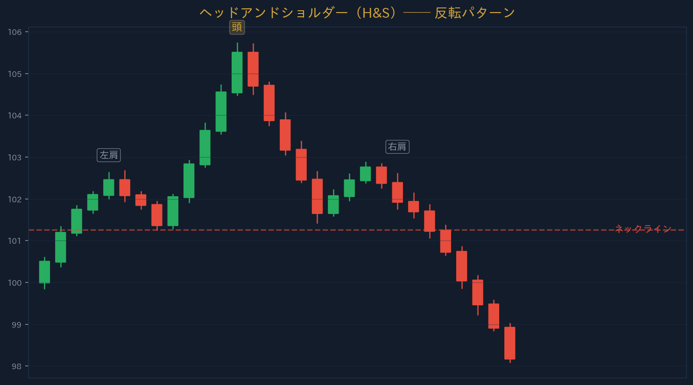
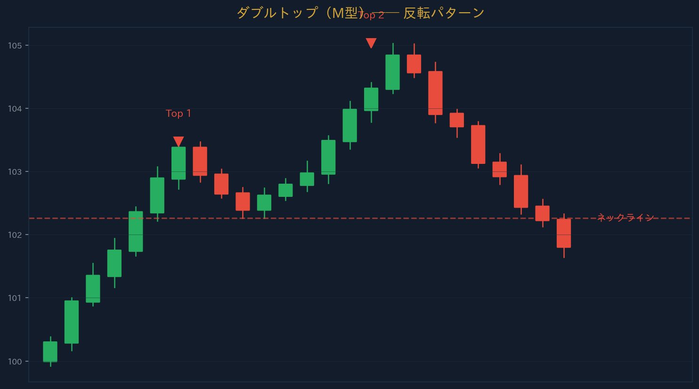
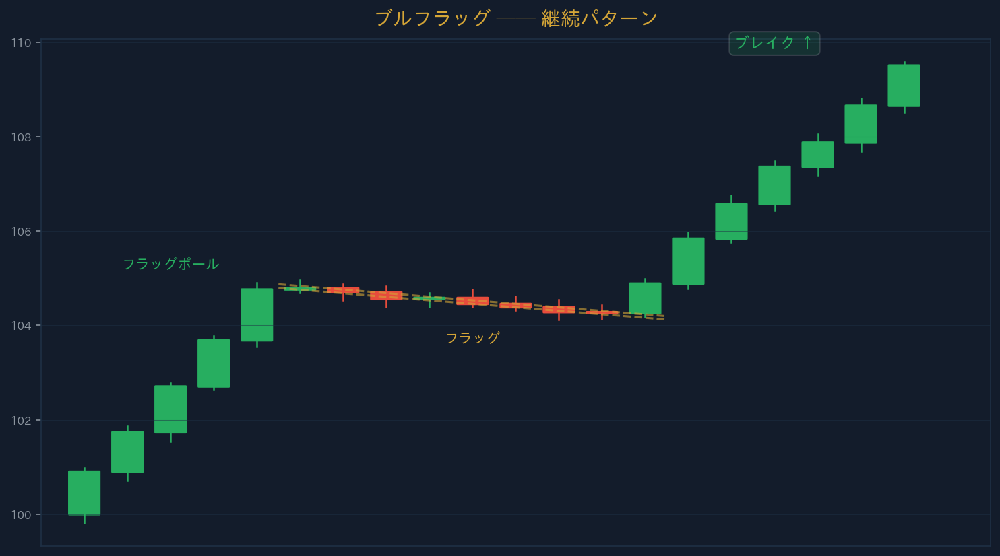
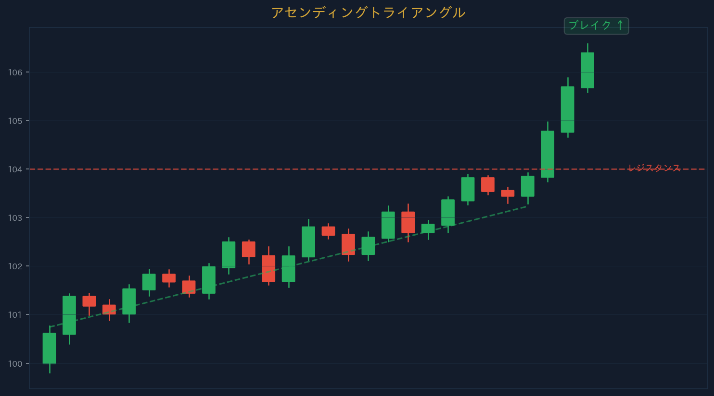

← Back
Section 11 — チャートパターン
←
1 / 10
→
SECTION 11
チャートパターン
Chart Patterns ── 繰り返される価格形状を識別する
URIKAI Trading Academy
ヘッドアンドショルダー（H&S）
最も有名な
反転パターン
── 3つの山で構成
左肩
→
頭
（最高値）→
右肩
ネックライン
下抜けで売りシグナル確定
ターゲット：頭→ネックライン距離をブレイクから計測
逆ヘッドアンドショルダー（Inverse H&S）は下落トレンドの底で出現し、上昇転換のシグナル。

チャートパターン | URIKAI Trading Academy
ダブルトップ / ダブルボトム
ダブルトップ
── 同じ価格帯で2回天井（
M型
）→ 下落
ダブルボトム
── 同じ価格帯で2回底（
W型
）→ 上昇
ネックラインのブレイクでパターン確定
ターゲット：2つのピークからネックラインまでの距離
トリプルトップ/ボトム（3回タッチ）はさらに信頼性が高い。

チャートパターン | URIKAI Trading Academy
フラッグ＆ペナント（継続パターン）
ブルフラッグ
：急上昇→やや下向きの調整→上方ブレイク
ベアフラッグ
：急下落→やや上向きの調整→下方ブレイク
ペナント
：急騰/急落後の三角形の小さな調整
ターゲット：フラッグポールの長さをブレイクポイントに加算

チャートパターン | URIKAI Trading Academy
トライアングル（三角保ち合い）
アセンディング△
：水平レジスタンス＋上昇サポート → 上方ブレイク傾向
ディセンディング△
：水平サポート＋下降レジスタンス → 下方ブレイク傾向
シンメトリカル△
：上下の収束 → どちらにもブレイク可能
ターゲット：三角形の最大幅をブレイクポイントに加算
計測値はあくまで目安。既知のS/Rが手前にあればそちらを優先する。

チャートパターン | URIKAI Trading Academy
ウェッジ（くさび型）
ライジングウェッジ
── 上昇する収束線。
弱気パターン
（下方ブレイク傾向）
フォーリングウェッジ
── 下降する収束線。
強気パターン
（上方ブレイク傾向）
高値と安値がどちらも切り上げ/切り下げだが、勢いが弱まっている
ブレイクの方向＋出来高増大で確認する
ウェッジはトレンドの終盤で出現しやすい。勢いの弱まりを収束する線で可視化したもの。
ライジングウェッジ（弱気）
↓ 下方ブレイク
フォーリングウェッジ（強気）
↑ 上方ブレイク
チャートパターン | URIKAI Trading Academy
まとめ
H&S
3つの山（左肩・頭・右肩）→ ネックライン下抜けで反転
ダブルトップ/ボトム
2回同じ価格帯でタッチ → M型（下落）/ W型（上昇）
フラッグ
急騰/急落→小さな調整→トレンド方向にブレイク（継続）
トライアングル
アセンディング（↑）、ディセンディング（↓）、シンメトリカル（どちらも）
ウェッジ
ライジング（弱気↓）、フォーリング（強気↑）
ターゲット
パターンの高さをブレイクポイントから計測（S/R優先）
チャートパターン | URIKAI Trading Academy
確認テスト ── 3問正解で受講完了
Q1. ヘッドアンドショルダーは何パターン？
継続パターン
反転パターン
Q2. フラッグは何パターン？
反転パターン
継続パターン
Q3. パターンのターゲットの計測方法は？
パターンの高さをブレイクポイントから計測
常に100pips固定
回答を確定する
チャートパターン | URIKAI Trading Academy
Section 11 Complete
Next → フィボナッチ
Home
URIKAI Trading Academy
← → キーでページ移動